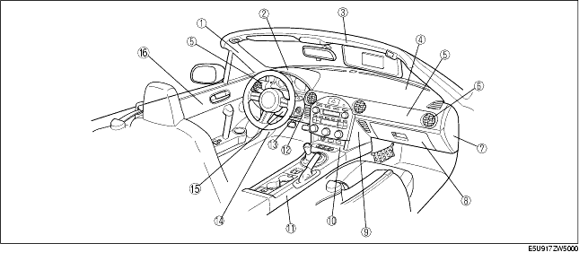
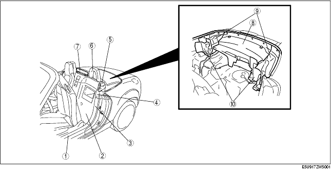
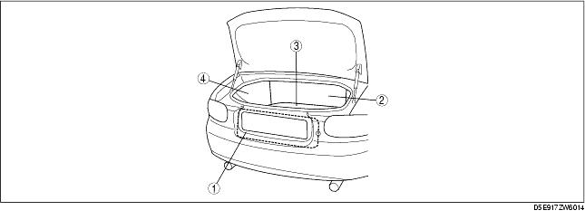
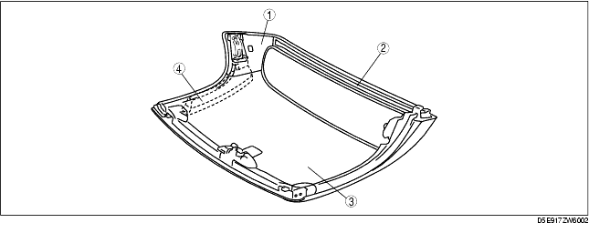

Workshop Manual ➭ BODY & ACCESSORIES ➭ INTERIOR TRIM ➭ INTERIOR TRIM LOCATION INDEX
INTERIOR TRIM LOCATION INDEX
id091700454200
{: #wp1059776}

|
A-pillar trim {: #wp1059807} (See A-PILLAR TRIM REMOVAL/INSTALLATION.) {: #wp1059872} |
|
|---|---|
|
2 {: #wp1059845} |
Meter hood {: #wp1059848} (See METER HOOD REMOVAL/INSTALLATION.) {: #wp1059896} |
|
3 {: #wp1059852} |
Front header trim {: #wp1059855} (See FRONT HEADER TRIM REMOVAL/INSTALLATION.) {: #wp1059920} |
|
4 {: #wp1059932} |
Dashboard {: #wp1059935} (See DASHBOARD REMOVAL/INSTALLATION.) {: #wp1059957} |
|
5 {: #wp1059969} |
Decoration panel {: #wp1059972} (See DECORATION PANEL REMOVAL/INSTALLATION.) {: #wp1059996} |
|
6 {: #wp1060008} |
Ventilator grille {: #wp1060011} (See VENTILATOR GRILLE REMOVAL/INSTALLATION.) {: #wp1060037} |
|
7 {: #wp1060049} |
Side panel {: #wp1060052} (See SIDE PANEL REMOVAL/INSTALLATION.) {: #wp1060080} |
|
8 {: #wp1060092} |
Glove compartment {: #wp1060095} (See GLOVE COMPARTMENT REMOVAL/INSTALLATION.) {: #wp1060125} |
|
9 {: #wp1060137} |
Side wall {: #wp1060140} (See SIDE WALL REMOVAL/INSTALLATION.) {: #wp1060172} |
|
10 {: #wp1060184} |
Console panel {: #wp1060187} (See CONSOLE PANEL REMOVAL/INSTALLATION.) {: #wp1060221} |
|
11 {: #wp1060233} |
Console {: #wp1060236} (See CONSOLE REMOVAL/INSTALLATION.) {: #wp1060272} (See CONSOLE DISASSEMBLY/ASSEMBLY.) {: #wp1060286} |
|
12 {: #wp1060298} |
Lower panel {: #wp1060301} (See LOWER PANEL REMOVAL/INSTALLATION.) {: #wp1060341} |
|
13 {: #wp1060353} |
Front side trim {: #wp1060356} (See FRONT SIDE TRIM REMOVAL/INSTALLATION.) {: #wp1060398} |
|
14 {: #wp1060410} |
Column cover {: #wp1060413} (See COLUMN COVER REMOVAL/INSTALLATION.) {: #wp1060457} |
|
15 {: #wp1060469} |
Door trim {: #wp1060472} (See DOOR TRIM REMOVAL/INSTALLATION.) {: #wp1060518} |

|
Scuff plate {: #wp1060627} (See SCUFF PLATE REMOVAL/INSTALLATION.) {: #wp1060691} |
|
|---|---|
|
2 {: #wp1060665} |
Back trim {: #wp1060668} (See BACK TRIM REMOVAL/INSTALLATION.) {: #wp1060715} |
|
3 {: #wp1060672} |
Tire house trim {: #wp1060675} (See TIRE HOUSE TRIM REMOVAL/INSTALLATION.) {: #wp1060739} |
|
4 {: #wp1060751} |
Quarter trim {: #wp1060754} (See QUARTER TRIM REMOVAL/INSTALLATION.) {: #wp1060776} |
|
5 {: #wp1060788} |
Seat back bar lower garnish {: #wp1060791} (See SEAT BACK BAR LOWER GARNISH REMOVAL/INSTALLATION.) {: #wp1060815} |
|
6 {: #wp1060827} |
Seat back bar garnish {: #wp1060830} (See SEAT BACK BAR GARNISH REMOVAL/INSTALLATION.) {: #wp1060856} |
|
7 {: #wp1060868} |
Aeroboard {: #wp1060871} (See AEROBOARD REMOVAL/INSTALLATION.) {: #wp1060899} |
|
8 {: #wp1060911} |
Rear package trim {: #wp1060914} (See REAR PACKAGE TRIM REMOVAL/INSTALLATION.) {: #wp1060944} |
|
9 {: #wp1060956} |
Rear side trim {: #wp1060959} (See REAR SIDE TRIM REMOVAL/INSTALLATION.) {: #wp1060991} |
|
10 {: #wp1061003} |
Side shelf {: #wp1061006} (See SIDE SHELF REMOVAL/INSTALLATION.) {: #wp1061040} |

|
Trunk end trim {: #wp1061135} (See TRUNK END TRIM REMOVAL/INSTALLATION.) {: #wp1061199} |
|
|---|---|
|
2 {: #wp1061173} |
Partition board {: #wp1061176} (See PARTITION BOARD REMOVAL/INSTALLATION.) {: #wp1061223} |
|
3 {: #wp1061180} |
Trunk mat {: #wp1061183} (See TRUNK MAT REMOVAL/INSTALLATION.) {: #wp1061247} |
|
4 {: #wp1061259} |
Trunk side trim {: #wp1061262} (See TRUNK SIDE TRIM REMOVAL/INSTALLATION.) {: #wp1061284} |
Detachable Hardtop

|
B-pillar upper trim {: #wp1061355} (See B-PILLAR UPPER TRIM REMOVAL [DETACHABLE HARDTOP].) {: #wp1061420} (See B-PILLAR UPPER TRIM INSTALLATION [DETACHABLE HARDTOP].) {: #wp1061434} |
|
|---|---|
|
2 {: #wp1061393} |
Rear trim {: #wp1061396} (See REAR TRIM REMOVAL [DETACHABLE HARDTOP].) {: #wp1061458} (See REAR TRIM INSTALLATION [DETACHABLE HARDTOP].) {: #wp1061472} |
|
3 {: #wp1061400} |
Headliner {: #wp1061403} (See HEADLINER REMOVAL/INSTALLATION [DETACHABLE HARDTOP].) {: #wp1061496} |
|
4 {: #wp1061508} |
Shock-absorbing pad {: #wp1061511} (See SHOCK ABSORBING PAD REMOVAL/INSTALLATION [DETACHABLE HARDTOP].) {: #wp1061538} |